Ресницы: как выбрать тушь, накладные ресницы и средства для ухода
Ресницы играют важную роль в макияже глаз — они делают взгляд выразительным, подчёркивают форму глаз и создают эффект объёма и длины. Современные средства для ресниц включают тушь, сыворотки для роста, накладные ресницы и специальные инструменты для завивки и укладки. Правильный выбор зависит от длины и густоты натуральных ресниц, желаемого эффекта и типа макияжа — естественный дневной, объёмный вечерний или стойкий профессиональный макияж.
Консультации / ЗаписатьсяТипы ресниц
Натуральные, накладные, пучковые и магнитные ресницы.
Уход за ресницами
Как укрепить и защитить ресницы от ломкости.
Средства для роста
Сыворотки, масла и активные компоненты для роста ресниц.
Накладные ресницы
Ленточные, пучковые и магнитные ресницы.
Инструменты для ресниц
Керлеры, щёточки и аксессуары для ухода и макияжа.
Ламинирование ресниц
Что это такое и кому подходит процедура.
Лучшие продукты
Популярные средства для ухода и укрепления ресниц.
Ошибки ухода
Чего не стоит делать, чтобы не повредить ресницы.
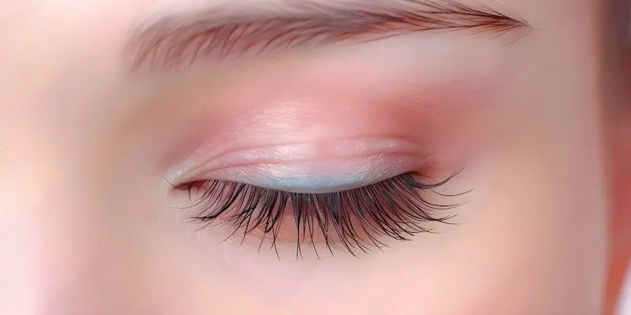
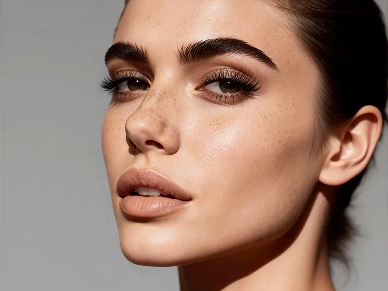
Типы ресниц
Ресницы могут отличаться по длине, густоте и форме. Кроме натуральных ресниц, существуют различные декоративные варианты, которые помогают создать более выразительный взгляд и разнообразные эффекты в макияже.
Выбор типа ресниц зависит от желаемого эффекта, типа макияжа и того, насколько естественный или выразительный результат вы хотите получить.
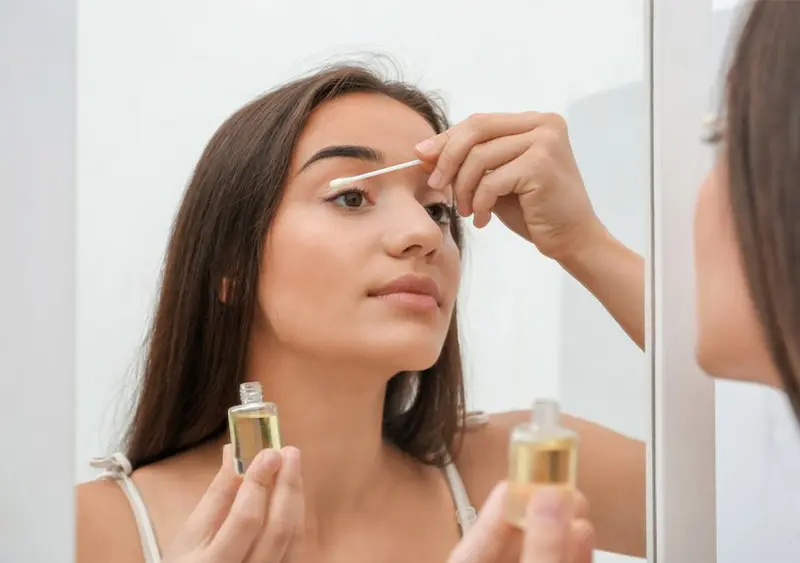
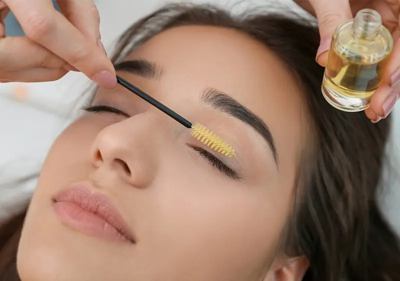
Уход за ресницами
Правильный уход за ресницами помогает сохранить их длину, густоту и здоровье. Регулярное очищение, питание и аккуратное использование косметики позволяют предотвратить ломкость и выпадение ресниц.
Комплексный уход помогает сохранить ресницы сильными, здоровыми и естественно красивыми даже при регулярном использовании макияжа.
Нужен профессиональный макияж?
Если вы хотите подобрать идеальный тон или сделать профессиональный макияж, обратитесь к опытному визажисту.
Посмотреть услуги визажиста
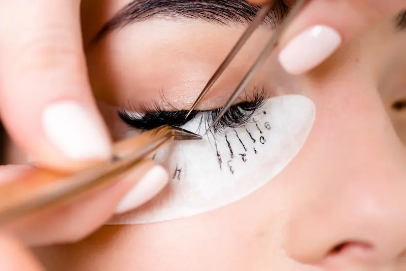
Советы визажистов: как сделать ресницы выразительными
Соблюдение этих советов поможет сделать ресницы более густыми, аккуратными и выразительными даже без сложного макияжа.
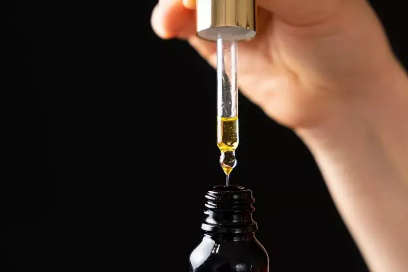
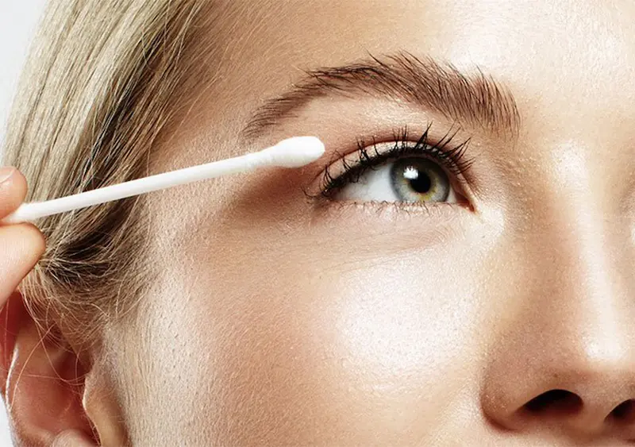
Средства для роста ресниц
Для укрепления и ускорения роста ресниц используются специальные средства, которые питают волосяные фолликулы и помогают сделать ресницы более длинными и густыми. Современные формулы могут содержать витамины, пептиды, масла и другие активные компоненты.
Регулярное использование качественных средств помогает улучшить внешний вид ресниц, сделать их более густыми и уменьшить ломкость.
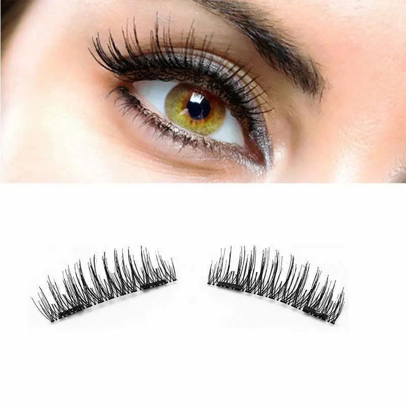
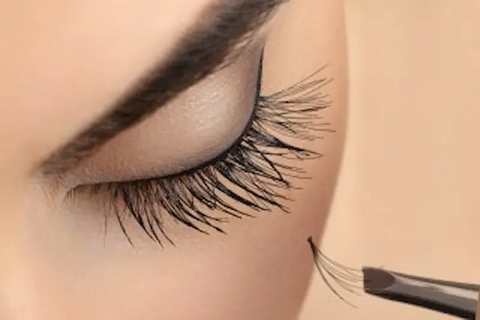
Накладные ресницы
Накладные ресницы помогают быстро создать эффект густых и длинных ресниц. Они широко используются в макияже для фотосессий, вечерних образов и праздничного макияжа. Современные модели выглядят очень естественно и легко наносятся.
При выборе накладных ресниц важно учитывать форму глаз, длину ресниц и желаемый эффект — от естественного до драматичного вечернего макияжа.
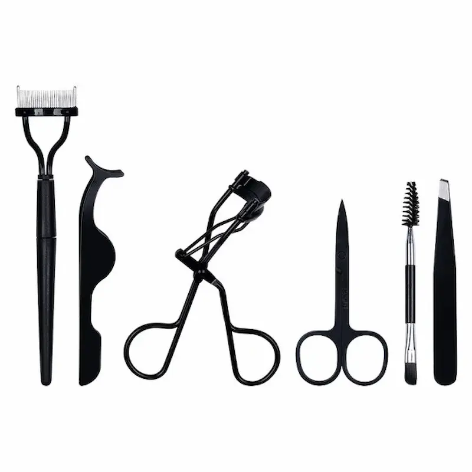
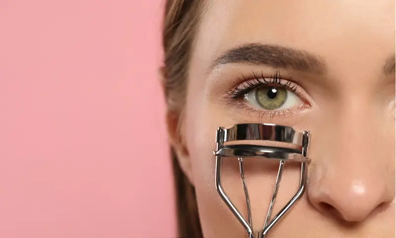
Инструменты для ресниц
Для создания аккуратного и выразительного макияжа глаз используются специальные инструменты для ресниц. Они помогают придать форму, разделить волоски и сделать макияж более аккуратным.
Правильно подобранные инструменты делают процесс нанесения макияжа глаз более удобным и помогают добиться аккуратного и естественного результата.
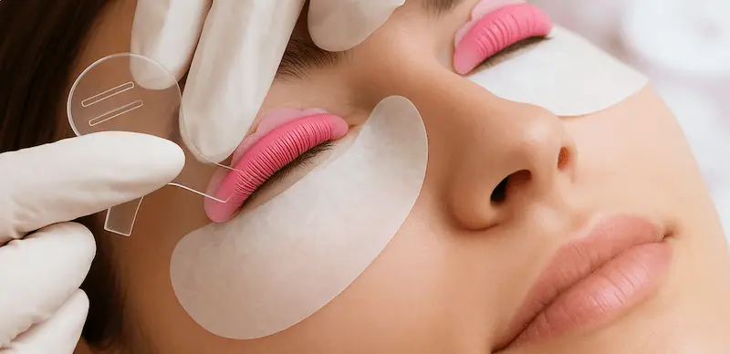
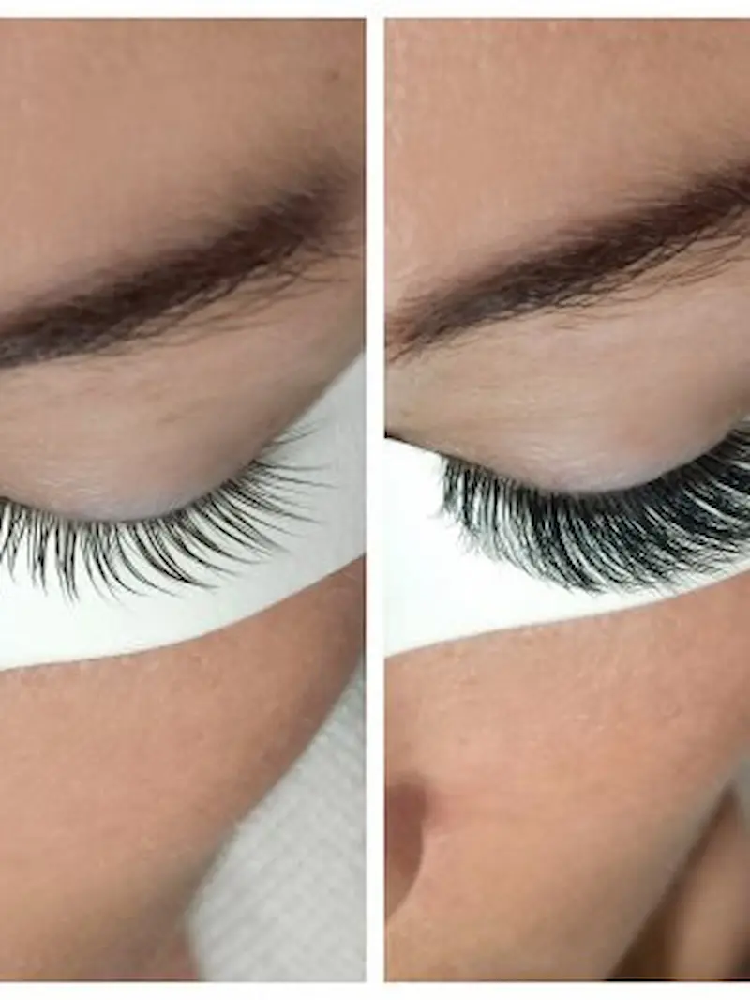
Ламинирование ресниц
Ламинирование ресниц — популярная косметическая процедура, которая помогает придать ресницам изгиб, визуальную густоту и здоровый блеск. Во время процедуры на ресницы наносятся специальные составы, содержащие питательные компоненты.
Ламинирование особенно популярно среди тех, кто хочет подчеркнуть натуральную красоту ресниц и сократить время на ежедневный макияж.
Лучшие продукты для ресниц
Подборка популярных средств для ухода и красоты ресниц: сыворотки для роста, накладные ресницы и наборы для ламинирования. Эти продукты легко найти в онлайн-магазинах и косметических сетях.
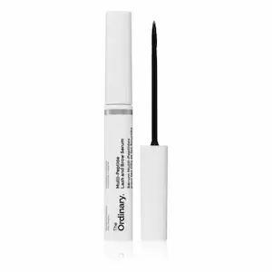
Сыворотка с пептидами для укрепления и роста ресниц
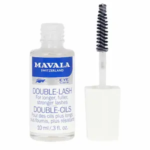
Классическая сыворотка для укрепления ресниц
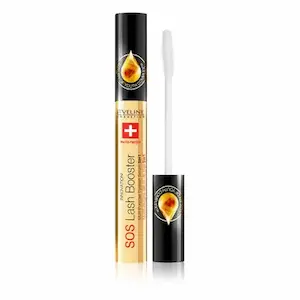
Бюджетная сыворотка для укрепления и питания ресниц
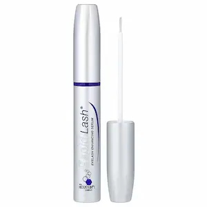
Популярная сыворотка для роста и густоты ресниц
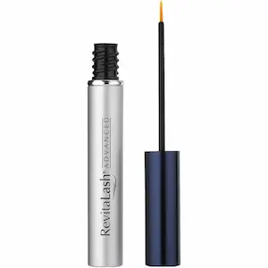
Профессиональный кондиционер для укрепления ресниц

Популярные накладные ресницы с естественным эффектом
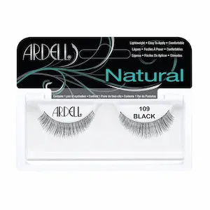
Лёгкие накладные ресницы для повседневного макияжа
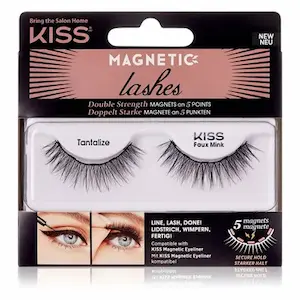
Натуральные накладные ресницы с мягким изгибом
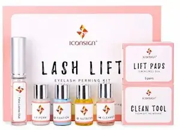
Набор для ламинирования ресниц в домашних условиях
Частые ошибки при уходе за ресницами
Избегая этих ошибок, можно сохранить ресницы здоровыми, красивыми и естественно густыми.
Часто задаваемые вопросы о ресницах
Как укрепить ресницы и предотвратить их выпадение?
Для укрепления ресниц важно использовать питательные сыворотки, аккуратно снимать макияж глаз и избегать сильного трения век. Регулярный уход помогает сохранить ресницы более густыми и здоровыми.
Помогают ли сыворотки для роста ресниц?
Многие современные сыворотки содержат витамины, пептиды и ухаживающие компоненты, которые помогают укрепить ресницы и улучшить их внешний вид при регулярном использовании.
Можно ли использовать накладные ресницы каждый день?
При аккуратном использовании и правильном снятии накладные ресницы можно носить регулярно. Важно выбирать качественный клей и не тянуть ресницы при снятии.
Вредно ли ламинирование ресниц?
Ламинирование считается безопасной процедурой, если её выполняют правильно и не слишком часто. Обычно рекомендуется делать процедуру раз в 6–8 недель.
Как правильно ухаживать за ресницами?
Уход за ресницами включает мягкое очищение области глаз, использование укрепляющих средств и регулярное расчесывание ресниц специальной щёточкой.